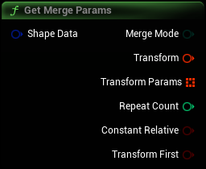

Get parameters that are not shape specific
|
Shape Data
S Dyn Shape Data Structure
|
Dyn Shape Data containing the params for this shape |
|
Merge Mode
E_MergeMode Enum
|
Which merge mode should be used for this shape |
|
Transform
Transform
|
Transform from the origin for this shape |
|
Transform Params
Array of Transforms
|
Additional transforms used for some merge modes |
|
Repeat Count
Integer
|
The number of times the mesh should be repeated |
|
Constant Relative
Boolean
|
Only used for AppendTransformed, should the primary Transform be relative See: https://docs.unrealengine.com/5.2/en-US/BlueprintAPI/GeometryScript/MeshEdits/AppendMeshTransformed/ |
|
Transform First
Boolean
|
Whether the first instance is transformed |